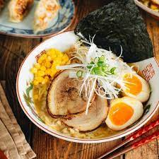

Miso Ramen

Ingredients
- 2 cloves garlic
- 1 knob ginger
- 1 shallot
- 1 Tbsp toasted white sesame seeds
- 1 Tbsp roasted sesame oil
- 1/4 lb ground pork
- 1 tsp doubanjiang (spicy chili bean sauce/broad bean paste)
- 3 Tbsp miso
- 1 Tbsp sugar
- 1 Tbsp sake
- 4 cups Chicken Stock/Broth (homemade or store bought)
- 1 tsp kosher salt
- 1/4 tsp white pepper powder
- 2 servings fresh ramen noodles
- Chashu (homemade or store bought)
- Spicy Bean Sprout Salad
- Ramen Egg (Ajitsuke Tamago)
- frozen or canned corn
- nori (dried laver seaweed)
- green onion/scallion
- Shiraga Negi (julienned long green onions)
- la-yu (Japanese chili oil)
- pickled red ginger (beni shoga or kizami beni shoga)
- white pepper powder
Steps
Soup
- Mince the garlic and ginger.
- Mince the shallot. Set these three prepared ingredients aside.
- Grind the sesame seeds, leaving some seeds unground for texture.
- In a medium pot, heat the sesame oil over medium-low heat and add the minced garlic, ginger, and shallot.
- With a wooden spatula, stir fry until fragrant.
- Add the meat and increase heat to medium. Cook the meat until no longer pink.
- Add the spicy bean paste (la doubanjiang) or non-spicy bean paste (doubanjiang) and miso. Quickly blend well with the meat before they get burnt.
- Add the ground sesame seeds and sugar and mix well.
- Add the sake and chicken stock and bring the mixture to a simmer.
- Taste your soup and add salt (if necessary) and white pepper. Each brand of chicken stock varies in saltiness, so you will have to taste your soup to decide how much salt to add.
- Cover with the lid and keep the ramen soup simmering while you cook the noodles.
Noodles
- Bring a large pot of unsalted water to a boil (ramen noodles already include salt in the dough). When the water is boiling, ladle some hot water into the serving bowls to warm them up. Meanwhile, gently shake the fresh noodles with your hand to separate and loosen them up.
- Important: Prepare the toppings ahead of time so you can serve the hot ramen immediately. For toppings, I use chashu, ramen egg, blanched bean sprout (or spicy bean sprouts), corn kernels, shiraga negi, chopped green onion, and a sheet of nori. Prepare a small dish of red pickled ginger, a bottle of la-yu (chili oil), and some white pepper powder on the table.
- Cook the noodles according to the package instructions. I usually cook the noodles al dente (about 15 seconds less than the suggested cooking time). Before your noodles are done cooking, empty the hot water from the warmed ramen bowls.
- When the noodles are done, quickly pick them up with a mesh sieve and shake out the excess water. You don’t want to dilute your soup, so make sure to drain the water well. Serve the noodles into the warmed bowls.
- Add the ramen soup and top with the various toppings you’ve prepared.
- Place the toppings of your choice on top of the noodles and serve immediately.
Homepage